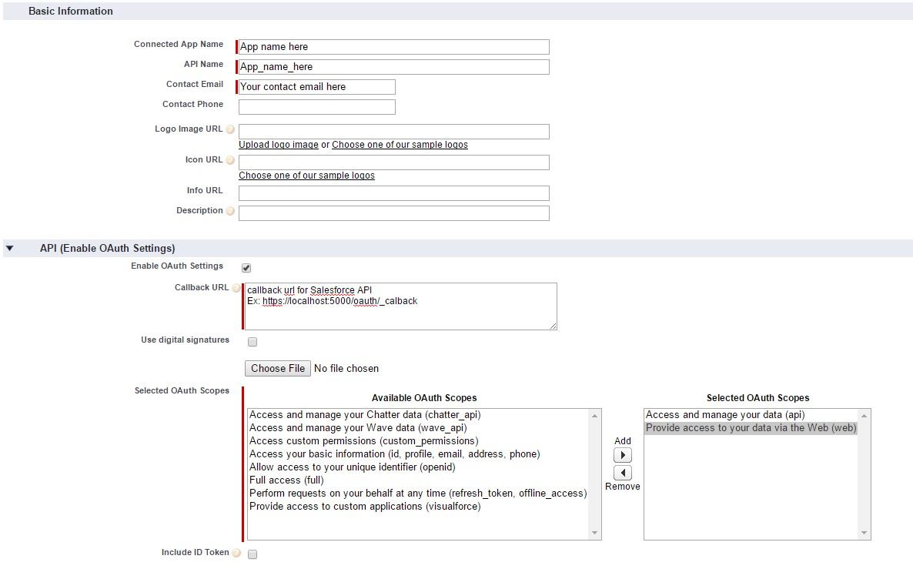

Ebiz Airlines Chatbot


Unless you have a reason otherwise, leave the default option (Install for Admins Only) selected when installing.

Fill required information
Deploy your own instance of Ebiz Airline Bot on Heroku by clicking the button below.
Choose a unique name for your Ebiz Airline Bot instance.
Define your config variables with information get from steps above
Download the Heroku Connect configuration file to your computer.
The connection between your Ebiz Airline Bot database and Salesforce is now being set up. Keep an eye on the Mappings section. Wait until you have nine objects wth a status of OK before you continue. This may take a few minutes.